← 返回阅读库 · 原论文目录
论文讲解阅读文档 · 论文精读 · v224
“LoRA已死，新王当立”参数再砍95%！LoRI
视频时长 00:18:13；讲解文字 5,959 字符；提取讲解画面 95 张。按视频原顺序阅读，每段文字保留时间戳。
文字来自整段视频的自动语音转写，按自然停顿分段，并与 PPT / 论文页面 / 演示画面对齐。未将讲解压缩为摘要；术语、数字和口述公式请结合画面及原论文核对。 阅读稿已校正规范部分明确术语误识别；原始逐字稿和每处修改记录另行保留。
讲解画面为源视频截图（640×360），不是可编辑 PPT 文件。全片按每秒 2 帧扫描内容变化，逐步展开页保留；连续动画保留代表画面。清晰度受源视频限制。
下载完整资料包 · 含离线 HTML、PDF、Word、全部 PPT 画面和字幕。
原论文与材料
LoRI: Reducing Cross-Task Interference in Multi-Task Low-Rank Adaptation · 下载完整 PDF（26 页）
按时间阅读
00:00:00–00:00:04 · 画面 001
00:00:00–00:00:04 · 画面 001你知道马斯克国团队最近在偷偷裁员吗？不过被裁的不是工程师，而是 AI 模型的参数。这项能够让 AI 巨头省下 90%算力成本的秘密武器，就藏在清华大学最新的论文 LoRI 里面。消参数如灭霸响指，保留 5%的关键神经元，性能不降反升。
00:00:04–00:00:08 · 画面 002
00:00:04–00:00:08 · 画面 00200:00:08–00:00:12 · 画面 003
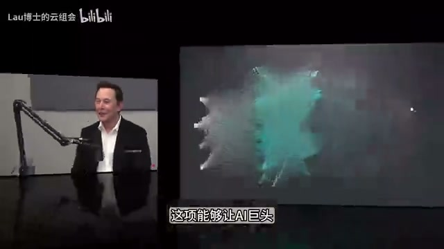
00:00:08–00:00:12 · 画面 00300:00:12–00:00:16 · 画面 004
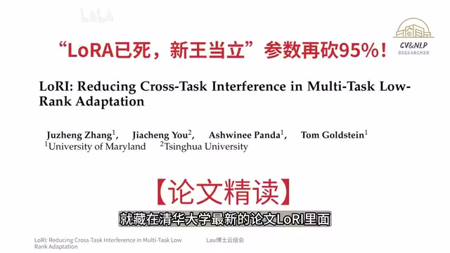
00:00:12–00:00:16 · 画面 00400:00:16–00:00:20 · 画面 005
00:00:16–00:00:20 · 画面 00500:00:20–00:00:22 · 画面 006
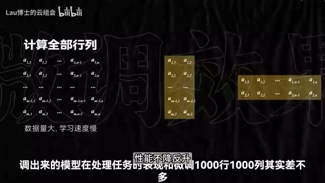
00:00:20–00:00:22 · 画面 00600:00:22–00:00:26 · 画面 007
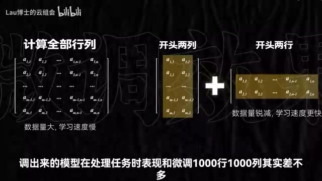
00:00:22–00:00:26 · 画面 007在微调霸主 LoRA 的基础上，再减 95%的参数。本期硬核解读，看 LoRI 如何改写模型训练法则，让参数效率重塑 AI 生态。欢迎来到六博士的领主会，我们每周都将至少有一篇高级案的论文精读发布出来。相信在一系列的论文学习以后，你就能成为人工智能领域的专家。
00:00:26–00:00:28 · 画面 008
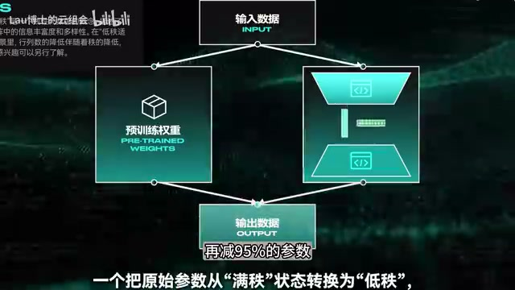
00:00:26–00:00:28 · 画面 00800:00:28–00:00:34 · 画面 009
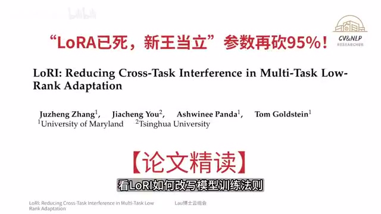
00:00:28–00:00:34 · 画面 00900:00:34–00:00:44 · 画面 010
00:00:34–00:00:44 · 画面 01000:00:44–00:00:45 · 画面 011
00:00:44–00:00:45 · 画面 01100:00:45–00:00:49 · 画面 012
00:00:45–00:00:49 · 画面 01200:00:49–00:00:52 · 画面 013
00:00:49–00:00:52 · 画面 01300:00:52–00:00:55 · 画面 014
00:00:52–00:00:55 · 画面 014大家好，今天呢给大家介绍一篇关于大语言模型高效微调的研究，它叫 LoRI。那 LoRI 呢，它就是 Low-Rank Adaptation 的一个改进版本。那 Low-Rank Adaptation 呢，又简称 LoRA。那它呢是弥补了 LoRA 在多任务场景下的不足。LoRI 呢，就旨在是减少这种跨任务的干扰，同时呢降低可训练的参数，最终呢达到提升模型性能的目的。
00:00:55–00:01:24 · 画面 015
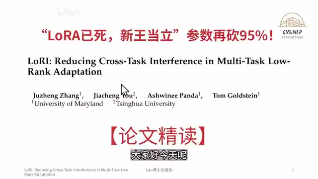
00:00:55–00:01:24 · 画面 015那我们呢将会从以下五个部分呢展开今天的讲解。那我们呢首先会对 LoRI 的一个优劣势进行分析，那让大家呢对于这个方法有一个比较全面的一个认识。接着呢是 LoRI 的核心的思想，那我们来看他的创新之处是在哪里。再有呢我们就会深入到他的方法部分，看他是怎么样提出三个部分的创新。
00:01:24–00:02:06 · 画面 016
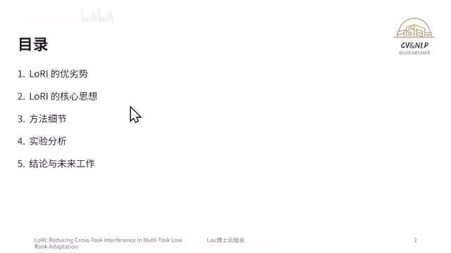
00:01:24–00:02:06 · 画面 016再之后呢就是实验分析的部分了。那这个部分呢作者呢就验证了 LoRI 的这个有效性以及优越性。最后呢论文的结论以及未来工作的展望作为结尾，总结了 LoRI 的贡献并探索了它后面的发展方向。我们总结了三个优势，三个劣势。那首先呢，
00:02:06–00:03:24 · 画面 017
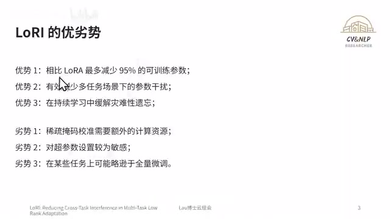
00:02:06–00:03:24 · 画面 017LoRI 它的优势是非常明显的。它相比于 LoRA 的话，最多是可以减少 95%的可训练参数。这对于大规模的这种模型的微调以及部署是能够大幅度的去降低成本的。另外 LoRI 能够有效的减少多任务场景下的参数干扰，来保证模型在多任务的学习里面的性能。另外非常重要的一点是，LoRI 在持续学习当中缓解了灾难性遗忘的问题，这对于模型的长期发展是非常重要的。但是 LoRI 它也不是说只有优势没有劣势，它也有劣势的。
那在使用这种稀疏掩码校准的时候呢，它就需要额外的一个计算资源，增加了预处理的时间。那另外呢，LoRI 对于这个超参的选择也是非常敏感的。那不恰当或是不合理的这个超参就会导致性能的下降。那在某些任务里面呢，那它也有可能是稍逊于这种全量的微调。但就总体而言呢，它 LoRI 的这个，优势还是非常明显的，也是为高效微调提供了全新的思路。LoRI 的核心思想是在 LoRA 的基础上去做了改进，实现了多任务场景下面的高效参数微调。具体来说就是 LoRI 通过将投影矩阵 A 固定为随机投影，不再对它进行更新，然后对于矩阵 B 就引入了任务的特定的稀疏掩码，对它进行稀疏化处理，只保留了跟，
00:03:24–00:04:13 · 画面 018
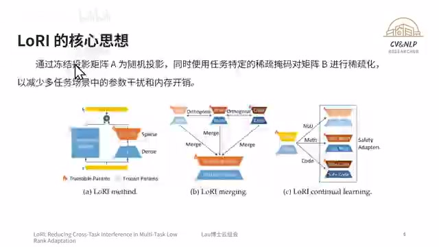
00:03:24–00:04:13 · 画面 018特定任务密切相关的参数进行更新。这个策略不仅能够降低可训练参数的数量，还有效的减少了不同任务之间的参数干扰，使得模型在多任务的学习里面能够更好地发挥，提升整体的性能。这种创新的方法还为解决多任务场景下参数干扰的问题提供了一种新的思路。接下来我们，
00:04:13–00:04:25 · 画面 019
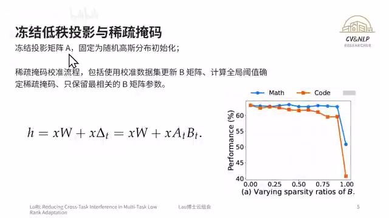
00:04:13–00:04:25 · 画面 019聚焦在这个冻结低秩投影以及稀疏掩码，这个是 LoRI 里面的重要的技术环节。投影矩阵 A 会被冻结并固定成了随机的高斯分布初始化。这样子做的话就避免了对矩阵 A 反复的更新，从而节省了大量的内存空间以及计算资源，最终也不会影响到模型的性能。
00:04:25–00:04:30 · 画面 020
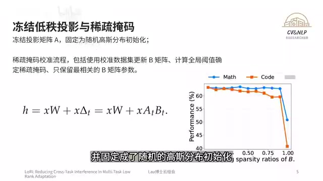
00:04:25–00:04:30 · 画面 02000:04:30–00:04:50 · 画面 021
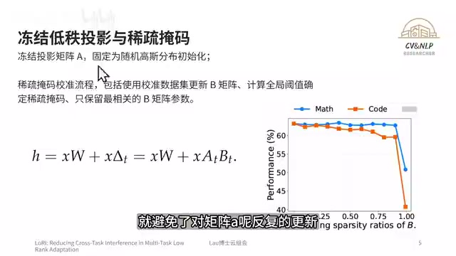
00:04:30–00:04:50 · 画面 021那接下来呢就是稀疏掩码的校准过程。那首先呢要利用这个校准的数据集呢对矩阵 B 去进行一个更新，然后来计算全局的预指来确定稀疏掩码，最终呢只保留那些跟任务最相关的 B 矩阵的这个参数进行后续的训练跟更新。那透过这种方式 LoRI 呢能够精准的控制参数更新的范围，提高模型的训练效率跟效果。
00:04:50–00:04:51 · 画面 022
00:04:50–00:04:51 · 画面 02200:04:51–00:05:10 · 画面 023
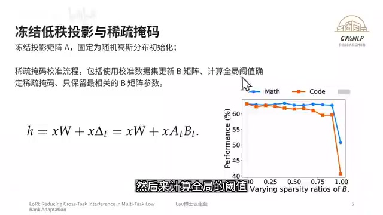
00:04:51–00:05:10 · 画面 023那这个呢是文章的公式仪，公式仪呢它就展示了这个权重更新的一个具体的数学形式。那这个 delta t 啊，它表示的是任务 t 的权重的更新的矩阵。那它呢是由低秩矩阵 a 和低秩矩阵 b 相乘得到的。那右边呢这个是
00:05:10–00:05:15 · 画面 024
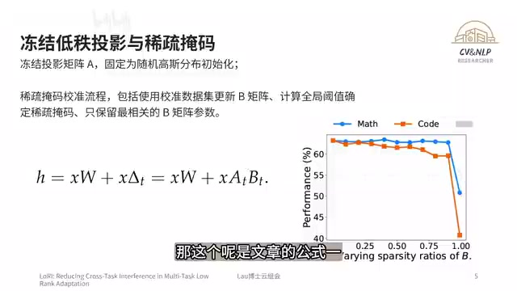
00:05:10–00:05:15 · 画面 02400:05:15–00:05:32 · 画面 025
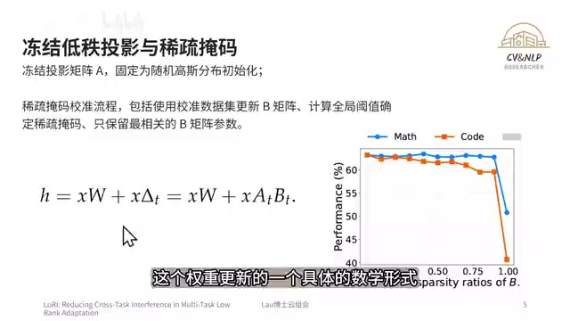
00:05:15–00:05:32 · 画面 025原文的 figure1a，那这个 figure1a 这个图就非常直观的展示在不同的稀疏比率底下，仅仅冻结这个 A 矩阵的模型史的一个表现。那我们可以看到，即便是在 90%的稀疏比率下面，这个模型它的性能依然是比较稳定的，说明了这个冻结矩阵 A 的可行性。
00:05:32–00:05:42 · 画面 026
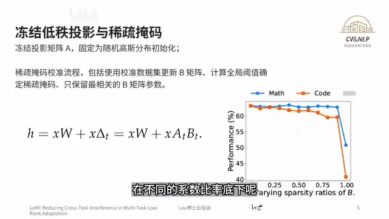
00:05:32–00:05:42 · 画面 02600:05:42–00:05:49 · 画面 027
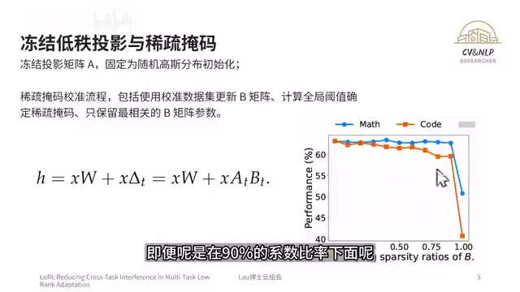
00:05:42–00:05:49 · 画面 02700:05:49–00:05:50 · 画面 028
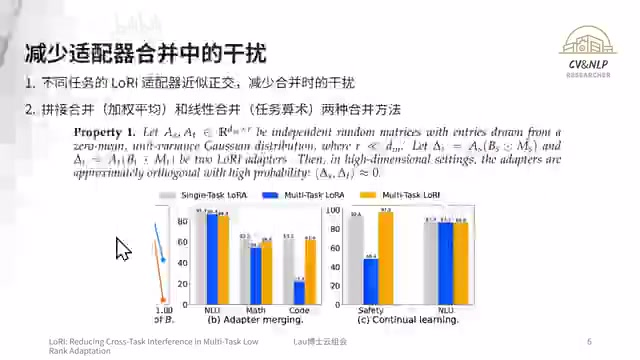
00:05:49–00:05:50 · 画面 028减少适配器合并中的干扰是 LoRI 方法的一个重要的部分。LoRI 的方法通过巧妙的设计，使得不同的任务适配器在表示空间里面近似正交。
00:05:50–00:06:32 · 画面 029
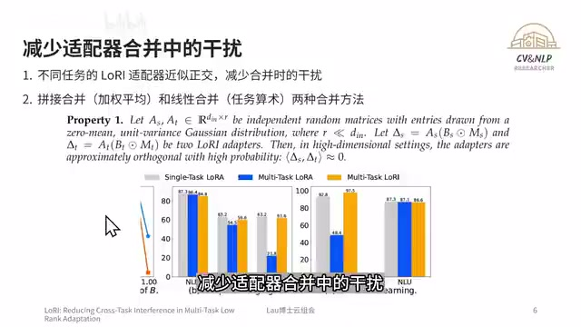
00:05:50–00:06:32 · 画面 029那这样就让每个任务就像是分配了一个独立的通道，彼此之间不会产生过多的干扰。那具体来讲，就在 Property1 里面，它从理论上去证明了在高维的随机投影的情况下，不同任务的 LoRI 的适配器之间的内积近 440 的，也就是它们是正交的。在实际的操作里面，作者提出了两种合并的方法，那一种是合并的拼接，那另外一种是线性的拼接。那我们来看一下经过这一系列的这种设计。
那 Figure1B 里面就直观的去展示了 LoRI 以及前人的方法的一个比较。那可以看得到，LoRI 呢在 Math 跟 Code 的这个两个问题上面呢，它都是有比较领先的一个优势，尤其是在 Code 上面，相对于前人那在 MLU 这个上面呢，虽然它略逊于前人的方法那但是呢差距并不大。
00:06:32–00:06:35 · 画面 030
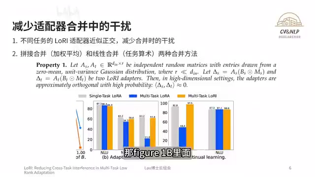
00:06:32–00:06:35 · 画面 03000:06:35–00:06:40 · 画面 031
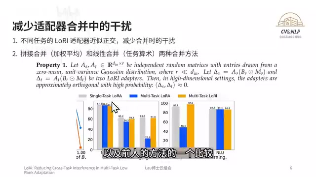
00:06:35–00:06:40 · 画面 03100:06:40–00:06:55 · 画面 032
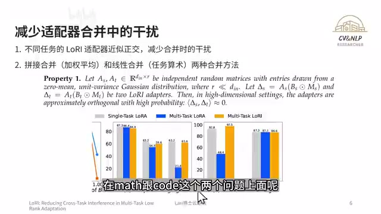
00:06:40–00:06:55 · 画面 03200:06:55–00:06:56 · 画面 033
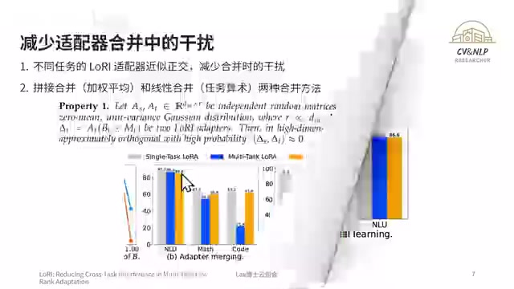
00:06:55–00:06:56 · 画面 033接下来我们来关注一下持续学习中的稀疏性作用。
00:06:56–00:07:11 · 画面 034
00:06:56–00:07:11 · 画面 034在 LoRI 里面，持续学习中的稀疏性的利用是一个重要的方面。为了在持续学习里面要既保持模型的安全对齐。LoRI 设计了一个两阶段的训练阶段。
00:07:11–00:07:24 · 画面 035
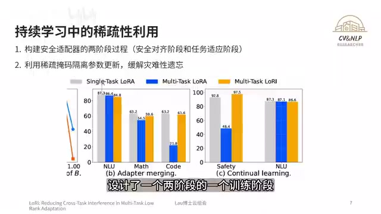
00:07:11–00:07:24 · 画面 035首先是安全对齐的阶段。先是在安全数据集上面训练一个安全的适配器。建立模型的安全的行为的准则。然后是任务适应的阶段。
00:07:24–00:07:34 · 画面 036
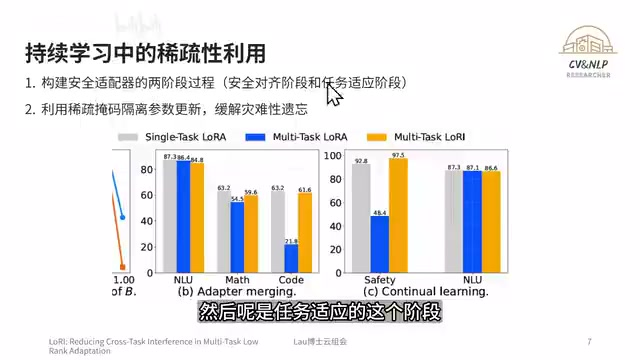
00:07:24–00:07:34 · 画面 036基于之前校准好的任务的特定掩码。分别对每个下游的任务进行微调。得到既安全又能适应特定任务的适配器。在这里的话
00:07:34–00:07:36 · 画面 037
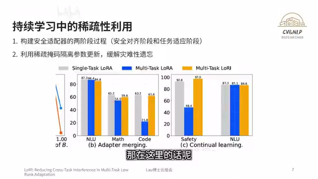
00:07:34–00:07:36 · 画面 037稀疏掩码就发挥了非常重要的作用。
00:07:36–00:07:51 · 画面 038
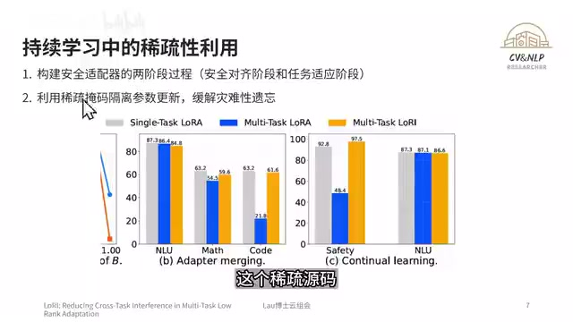
00:07:36–00:07:51 · 画面 038它通过了隔离参数的更新。使得了安全对齐的阶段跟任务适应的阶段更新的参数。它不会互相干扰有效的缓解了灾难性遗忘的问题。
00:07:51–00:07:55 · 画面 039
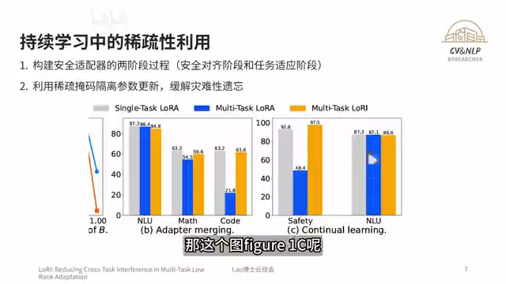
00:07:51–00:07:55 · 画面 039图 Figure1C它就展示了从安全任务到其他任务的持续学习的效果。
00:07:55–00:08:20 · 画面 040
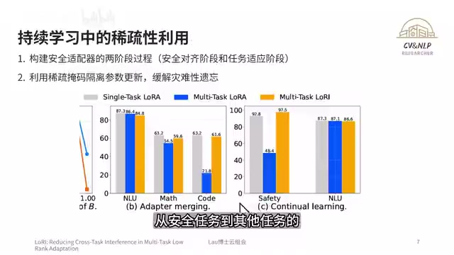
00:07:55–00:08:20 · 画面 040我们可以看到 LoRI依然保留着在这个安全性能的那就是它有一个非常好的一个效果，而它的前人的一些方法呢就出现了明显的灾难性遗忘的这种现象。那这种稀疏性的利用的这个方法呢，那为持续学习中的知识呢保留了很好的一个思路。
00:08:20–00:08:29 · 画面 041
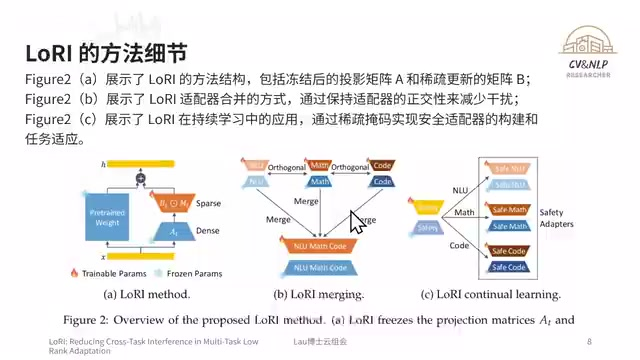
00:08:20–00:08:29 · 画面 041接下来我们来看看 LoRI 的各项的方法细节，像这个图 2，图 2A 就展示了 LoRI 的整体的结构。其中这个投影矩阵 A 它就被冻结成随机的高斯分布，矩阵 B 就通过稀疏掩码进行更新。这种设计不仅可以减少可训练的参数的数量，还通过了稀疏性控制了参数的更新范围。
00:08:29–00:08:30 · 画面 042
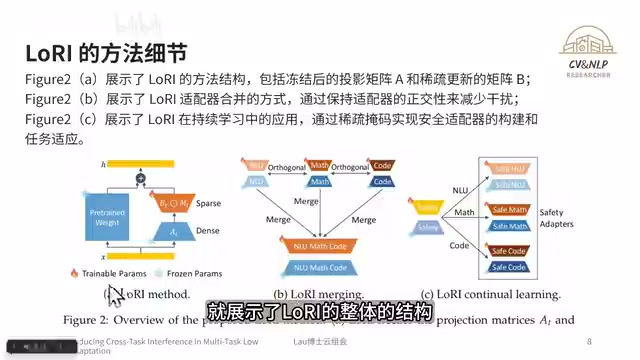
00:08:29–00:08:30 · 画面 04200:08:30–00:08:43 · 画面 043
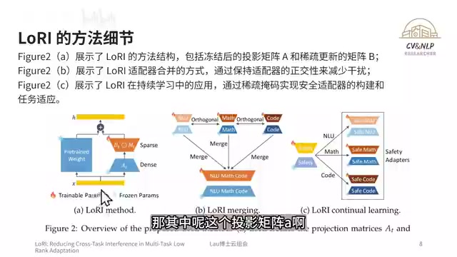
00:08:30–00:08:43 · 画面 04300:08:43–00:08:44 · 画面 044
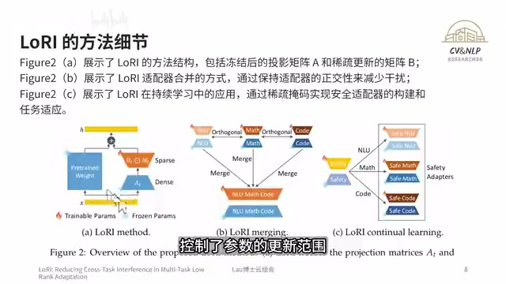
00:08:43–00:08:44 · 画面 04400:08:44–00:09:02 · 画面 045
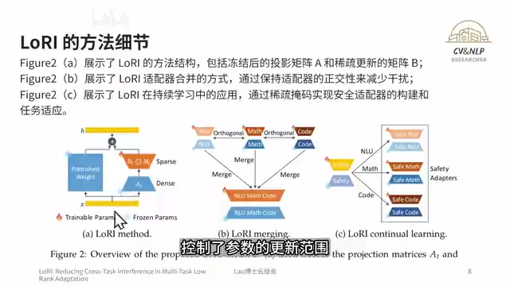
00:08:44–00:09:02 · 画面 045那 fig2b 呢，也就是图 2b 展示了 LoRI 在适配器的合并里面的一个优势。那通过保持不同的任务的适配器的正交性，显著了减少了合并时的这种干扰。那这个图 2c 呢就展示了 LoRI 在持续学习里面的应用。那透过这个两阶段的训练过程的掩码和稀疏掩码的这个使用呢，就实现了安全对齐和任务适应的同时，有效的缓解了灾难性遗忘的问题。
00:09:02–00:09:12 · 画面 046
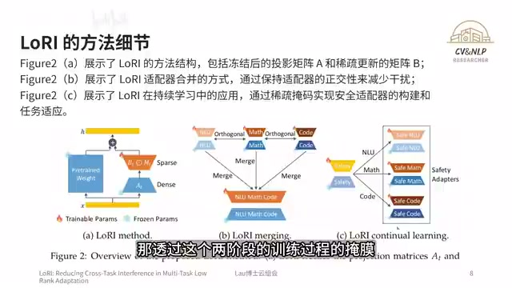
00:09:02–00:09:12 · 画面 04600:09:12–00:09:15 · 画面 047
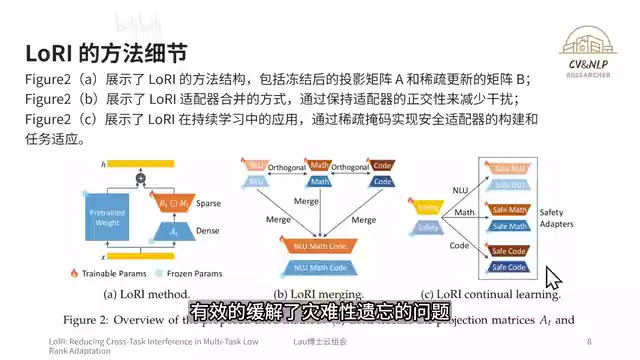
00:09:12–00:09:15 · 画面 047那接下来呢我们来聊一聊这个 LoRI 的关键公式。
00:09:15–00:09:27 · 画面 048
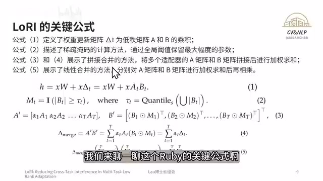
00:09:15–00:09:27 · 画面 048那一共有五个公式。那公式一呢就是我们前面提到的更新矩阵调查 T 呢。就是低秩矩阵 A 跟 B 的层级。那公式二呢它就描述了稀疏掩码的计算方法。
00:09:27–00:09:31 · 画面 049
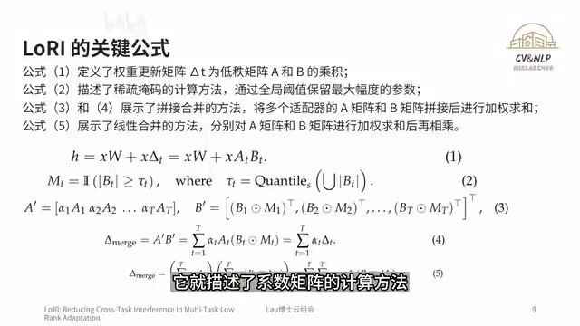
00:09:27–00:09:31 · 画面 049那通过全局的预知保留呢。
00:09:31–00:09:51 · 画面 050
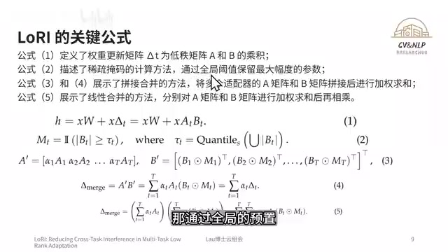
00:09:31–00:09:51 · 画面 050最大幅度的参数来实现这个 B 矩阵的稀疏化。公式三四就描述了拼接的方法。就讲的是将多个适配器 A 跟 B 的矩阵。拼接以后进行加权平均来实现任务适配器的合并那公式五的话呢就是展示了这个线性的合并方法
00:09:51–00:09:53 · 画面 051
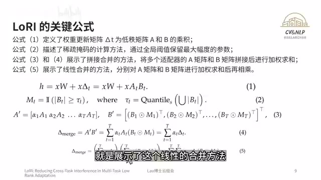
00:09:51–00:09:53 · 画面 051那分别呢就是对 A 矩阵跟 B 矩阵呢
00:09:53–00:10:00 · 画面 052
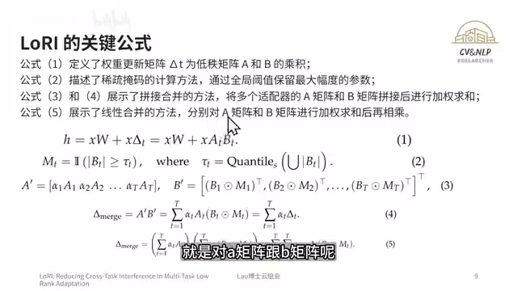
00:09:53–00:10:00 · 画面 052进行这个加权求和以后再相乘得到合并的这个适配器
00:10:00–00:10:24 · 画面 053
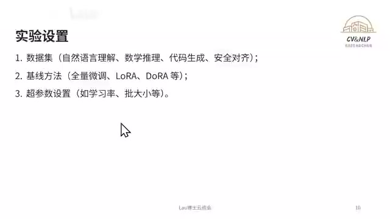
00:10:00–00:10:24 · 画面 053那实验的部分呢是比较全面的首先呢数据集的部分呢分别是四个分别呢是这个自然语言理解数学推理代码生成安全对齐那对比的这个基线方法呢就有这个全量微调LoRA 跟 DoRA那还做了这个超参方面的一个探索就像学习率啊还有这个 bench
00:10:24–00:10:27 · 画面 054
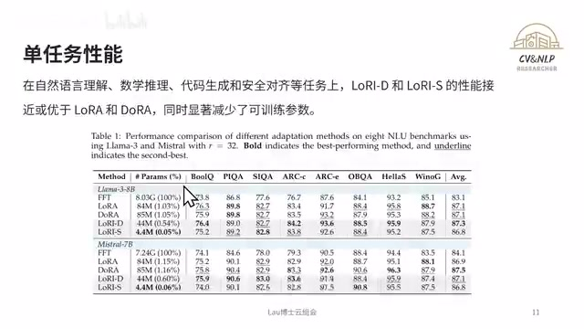
00:10:24–00:10:27 · 画面 054那接下来我们来看一下这个单任务性能首先这个 table1
00:10:27–00:10:31 · 画面 055
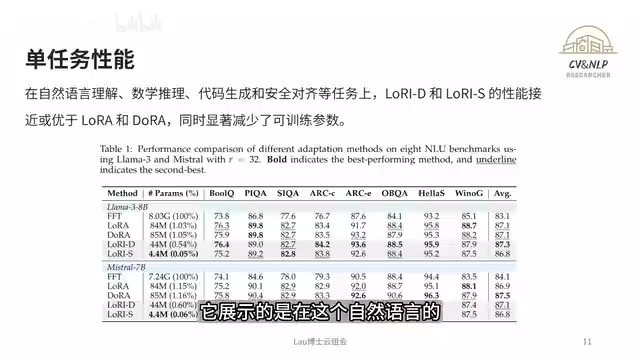
00:10:27–00:10:31 · 画面 055它展示的是在这个自然语言的这个方面的一个对比
00:10:31–00:10:37 · 画面 056
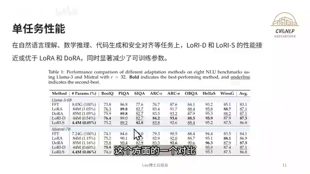
00:10:31–00:10:37 · 画面 056那可以看到了在 Llama3 的这个情况下这个 LoRI-D 呢它是取得了最好的效果
00:10:37–00:10:41 · 画面 057
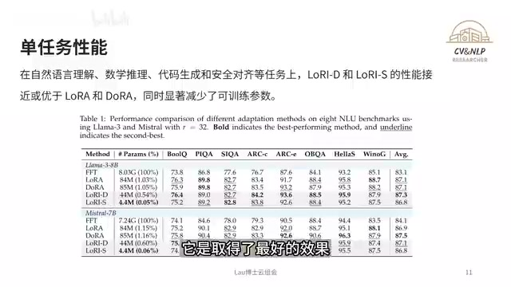
00:10:37–00:10:41 · 画面 057那在多个的这个数据集上面它的表现呢
00:10:41–00:11:00 · 画面 058
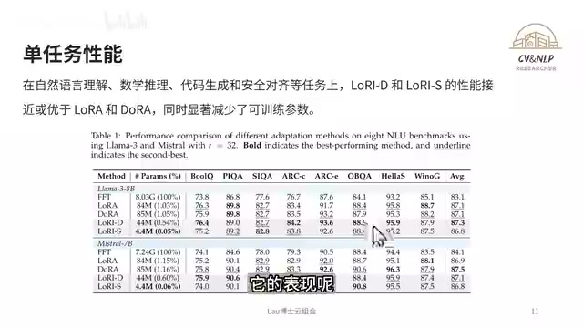
00:10:41–00:11:00 · 画面 058都是最优的那它的性能都是最优的那这个 LoRI 的 S 也是非常的亮眼那它的这个参数呢相比较于传统的 LoRA 或是 DoRA它的这个参数量只有它们的二十分之一那损失的性能并不大那 Mistral 的 7B 的话呢
00:11:00–00:11:03 · 画面 059
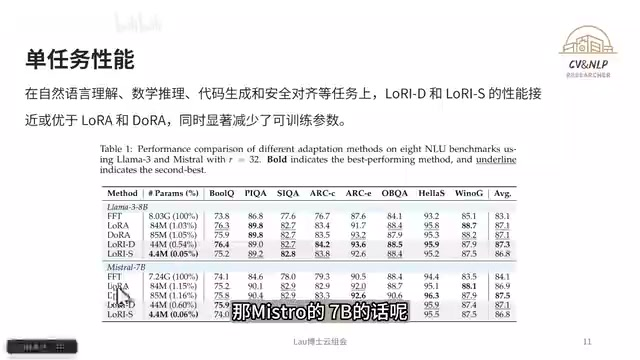
00:11:00–00:11:03 · 画面 059这个情况下呢那实际上它的这个成绩依然是非常亮眼的
00:11:03–00:11:05 · 画面 060
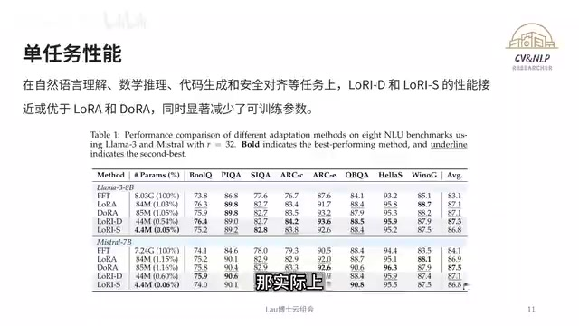
00:11:03–00:11:05 · 画面 06000:11:05–00:11:08 · 画面 061
00:11:05–00:11:08 · 画面 061虽然这个 LoRI-D 的话呢
00:11:08–00:11:10 · 画面 062
00:11:08–00:11:10 · 画面 062并没有取得最好的成绩但也接近了跟这个前面这个
00:11:10–00:11:13 · 画面 063
00:11:10–00:11:13 · 画面 063它是次优就差了 0.4
00:11:13–00:11:17 · 画面 064
00:11:13–00:11:17 · 画面 064那我觉得更亮眼的还是这个 LoRI-S
00:11:17–00:11:21 · 画面 065
00:11:17–00:11:21 · 画面 065那这个它还是用了这个
00:11:21–00:11:31 · 画面 066
00:11:21–00:11:31 · 画面 066二十分之一二十分之一的这个更新的这个参数它就达到了这个相差不多的这个性能了所以这个还是非常厉害
00:11:31–00:11:49 · 画面 067
00:11:31–00:11:49 · 画面 067Table 2 分别是展示了在 Math 数学然后代码 HumanEval 以及 Safety 安全方面的几个领域的一个验证我们可以看到 LoRI-D 跟 LoRI-S 基本上是占据了最优跟次优的主要的数据其中在
00:11:49–00:11:51 · 画面 068
00:11:49–00:11:51 · 画面 06800:11:51–00:11:59 · 画面 069
00:11:51–00:11:59 · 画面 069用 Llama3-8B 的时候 LoRI-D 的这个优势会更大性能上的这个优势那在 Mistral7B 的话就 LoRI-S 的优势看着会更大我们可以看得到 LoRI-S 在用这么少的参数的跟进的情况下依然能取得这么高的成绩确实是非常厉害的
00:11:59–00:12:05 · 画面 070
00:11:59–00:12:05 · 画面 07000:12:05–00:12:06 · 画面 071
00:12:05–00:12:06 · 画面 07100:12:06–00:12:15 · 画面 072
00:12:06–00:12:15 · 画面 072那实际上在真实的场景里面呢这种多任务的合并的情况的大模型呢应该才是更加的常用的那现在 Table 3 它就展示了在自然语言数学理解还有代码生成以及安全对齐四个方面的去做了评估我们可以看到 LoRI 第一呢它占据了多数的最优这个加粗的还有次优就下面这个带化线的多数的这个
00:12:15–00:12:25 · 画面 073
00:12:15–00:12:25 · 画面 07300:12:25–00:13:03 · 画面 074
00:12:25–00:13:03 · 画面 074最优跟次优的这个成绩呢都囊括在这个 LoRI-D 的这个上面那所以看可以看得出啊这个 LoRI-D 就 LoRI 的这个设计它的一个有效性那当然了这个 LoRI-S 其实也不差因为它的这个优势的话呢是在于用比较少的这个参数呢去获得一个比较好的一个成绩那在持续学习这个方面呢 LoRI 呢那更是有很大的一个优势的表现那首先呢我们来看这三个的 single task 还有两个的 multitask 他们不论是 safety 也好自然语言也好或者说是这个代码或者是数学也好那他们的几个
00:13:03–00:14:47 · 画面 075
00:13:03–00:14:47 · 画面 075的 performance 的水平都是比较在同一个线上而且是水平比较高的像我们看到 multitask 的 lower 的话它就差的比较多了可能只有其他人的大概是一半那我们可以看到啊因为这个 MultiTask LoRI-D 呢它的这个可更新的这个参数啊相对会更多一些那所以的话呢那在后续呢这个在 MultiTask 的话呢它会比这个 LoRI 的 S 呢是要稍微性能要好一点点那基本上呢我们可以看 SingleTask 的这个 LoRI-D 呢它其实不相上下跟 Multitask 多数情况它是领先的但领先的其实也并不多所以也可以看得到 Multitask 的 LoRI 实际上是非常 powerful 的因为它不仅仅是要一个任务它是关注的是多任务它如果出来的表现都跟 Single task 不相上下的话说明它的结构也非常强的鲁棒性当然了在安全方面的话
更新参数更少的 LoRI S 是更有优势的那它的提升的这个幅度是比较大的我们可以看得到这里有将近三个点那当然这个提升不多这个有两个点那所以呢各有千秋啊那但是总结下来就是这个 LoRI 它就是非常好的我们来看到消融实验的 FIG 4A 的这个部分那 4A 的话呢它讲的是这个校准的这个步骤跟 accuracy 的一个关系那分别的验证了数学以及代码的两个方面那我们可以看得到那这个总体上呢就是你的这个校验的步骤越多它呈现的就是一个正相关的一个趋势那当然了它这个过程它并不是线性的它就有点像是这种
00:14:47–00:15:28 · 画面 076
00:14:47–00:15:28 · 画面 076会有点曲折它就不一定说你增加了它就一定是变好它总体的趋势是变好的像到 1000 的话它就会总体上来看会比 600 之前的都要好这个步骤
00:15:28–00:16:35 · 画面 077
00:15:28–00:16:35 · 画面 077那 figure4a 的 b 呢，它就是讲这个系数的一个比率还有这个 layer index 的一个关系。那我们可以看到，up and down 呢，那其实就是这个会前向的这个部分，那就是两个投影。那我们可以看到了，那 up 跟 down 呢，它比这个 kb 啊，这个 kb 是这个注意力机制方面的内容。它呢，这个稀疏的比率的是要更低的。其中呢，upper 呢就会比 down 呢那个更低。那这个稀疏比率它越高的话呢，就这个参数就越少。那越低的话呢，就参数越多。那很明显呢，那它这个表明呢，就是说首先呢，upper 呢这个参数呢，它是比 down 总体上来看是要更多的。然后越深的话呢，就那个 layer 的这个 index 越大的话呢，
那它的这个参数也是越多的。那这个也是给这个一个可解释性嘛。那一般来讲，那模型肯定是你得有参数嘛。那有参数它才能学习嘛。那它主要是集中在这个 layer index 比较大的然后是在 up 跟 down 的这些位置里面，在这个 create 前向的这个部分里面。
00:16:35–00:16:40 · 画面 078
00:16:35–00:16:40 · 画面 078那 fig4c 呢它探索的是这个掩码的这个 granularity 也就是它的粒度啊跟这个性能之间的关系那从这个 c 的这个图来看呢就是当它选择了一个掩码范围越大的话呢那它性能是要会越好的那这个 model 级的话呢实际上就是整一个 model 里面去选一个掩码那你越往下面的话呢就是到 layer 到 matrix 那它的这个范围就越来越小了
00:16:40–00:16:43 · 画面 079
00:16:40–00:16:43 · 画面 07900:16:43–00:16:44 · 画面 080
00:16:43–00:16:44 · 画面 08000:16:44–00:16:46 · 画面 081
00:16:44–00:16:46 · 画面 08100:16:46–00:16:52 · 画面 082
00:16:46–00:16:52 · 画面 08200:16:52–00:16:57 · 画面 083
00:16:52–00:16:57 · 画面 08300:16:57–00:17:02 · 画面 084
00:16:57–00:17:02 · 画面 084那再有了这个 fig4d 呢就是讲这个合并权重的一个效果那这个合并权重的话呢我们可以看得出来啊实际上有好有坏了比如说像在 0.4 的时候呢除了 code 那它的这个效果都会很不错但是呢在 code 上面的这个退化就比较严重了所以相对来讲比较均衡的是这个位置的 0.3 的时候呢总体的一个效果是比较好的
00:17:02–00:17:06 · 画面 085
00:17:02–00:17:06 · 画面 08500:17:06–00:17:15 · 画面 086
00:17:06–00:17:15 · 画面 08600:17:15–00:17:17 · 画面 087
00:17:15–00:17:17 · 画面 08700:17:17–00:17:22 · 画面 088
00:17:17–00:17:22 · 画面 08800:17:22–00:17:27 · 画面 089
00:17:22–00:17:27 · 画面 08900:17:27–00:17:28 · 画面 090
00:17:27–00:17:28 · 画面 090在讲完这个消融实验以后，就到了结论跟 future work 的部分。LoRI 在减少可训练参数和降低多任务场景下的参数干扰方面取得非常显著的成果，为大模型的参数的高效微调提供了一种有效的解决方案。future work 主要就是集中在探索结构化的稀疏模式，比如像简直或者是快系数等等。另外一个是将 LoRI 的核心设计要拓展到扩散模型。
00:17:28–00:17:55 · 画面 091
00:17:28–00:17:55 · 画面 09100:17:55–00:17:56 · 画面 092
00:17:55–00:17:56 · 画面 092或者是视觉语言的这种多模态的领域的这些模型，来满足这个多模态应用的一个需求。那我们今天云组会呢，到这里就结束了。如果对你有所启发了，感谢三连加关注。如果你有什么想法，欢迎留言。我们下期节目不见不散。
00:17:56–00:17:58 · 画面 093
00:17:56–00:17:58 · 画面 09300:17:58–00:18:13 · 画面 094
00:17:58–00:18:13 · 画面 09400:18:13–00:18:13 · 画面 095
00:18:13–00:18:13 · 画面 095转写与来源说明 · 1 个自动复核提示
保留 110 个原始语音片段，1 个片段触发自动复核提示。提示仅用于定位可能的术语、重复或识别问题，不等于已确认错误。
讲解画面为源视频截图（640×360），不是可编辑 PPT 文件。全片按每秒 2 帧扫描内容变化，逐步展开页保留；连续动画保留代表画面。清晰度受源视频限制。
原视频：paper/合集_2026-10-16_论文精读/“LoRA已死，新王当立”参数再砍95%！LoRI【论文精读】.mp4
SHA-256：42b856aafc2decf7a33a1bf83634bc2ac7b23d85102b92da3de86b62aaa14e9e
二十分之一
全文按视频语音与画面制作。原论文可从上方链接下载；完整资料包保留全文、原始逐字稿、字幕和校对记录。